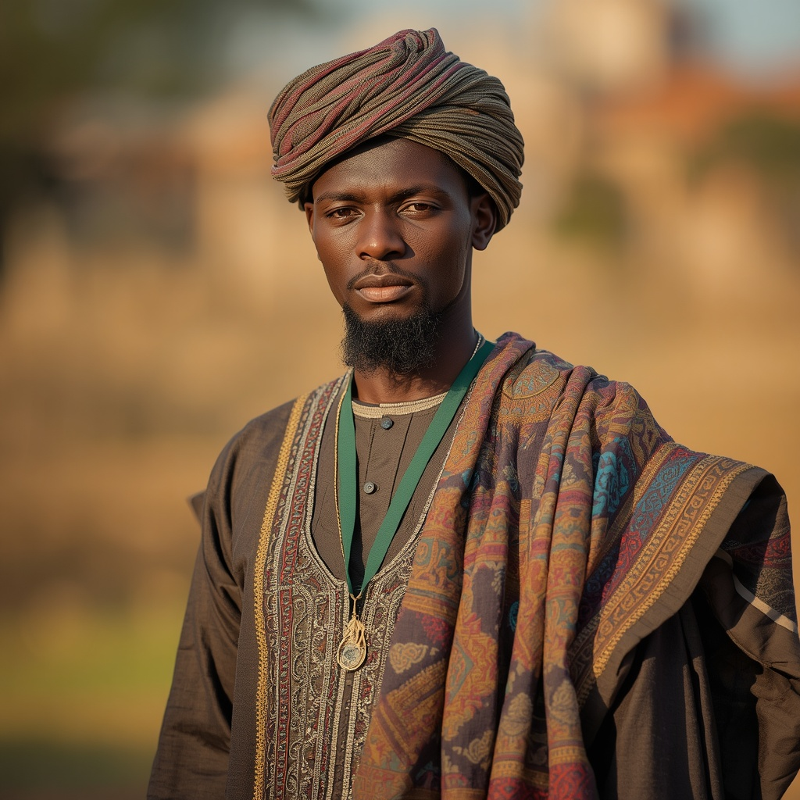

🧑🤝🧑 世界の民族・人びと
People of the World。国境を越えて暮らす人びとを、地域ごとに紹介します。伝統だけでなく、今の暮らしも一緒に。

ハウサ
🗣 使用言語
ハウサ語
👥 人口の目安
約8,600万人(ナイジェリア北部・ニジェールを中心とする西アフリカ)
👘 伝統衣装
男性は刺繍の施された長衣「ババンリガ」にターバンを合わせ、女性は柄物の布を巻いた「ザニ」と揃いの上衣、頭巾を着用する。
🏠 住居
日干しレンガを用いた「トゥバリ」と呼ばれる建築様式が特徴で、幾何学模様の装飾を施した多層構造の邸宅も見られる。
🍲 食文化
すりつぶした穀物を練った主食「トゥオ」にスープを添えて食べ、豆の揚げ物「コサイ」や香辛料の効いた串焼き肉「スヤ」が広く親しまれている。
🎵 音楽・踊り
リュート(グルミ)や擦弦楽器(ゴジェ)、トランペット(カカキ)などを用いた宮廷音楽の伝統があり、格闘技「ダンベ」も文化的な行事として親しまれる。
🎉 行事・祭り
華やかな馬の行列を伴う「ドゥルバー祭」や、イスラムの祝祭日を祝う「ラナル・サライ」が代表的な行事である。
🙏 信仰・価値観
大多数がスンニ派イスラム教(マーリク派)を信仰し、11世紀頃から交易を通じて広まったとされる。一部地域には伝統的な土着信仰(マグザンチ)も残る。
📜 歴史
7〜11世紀頃に「ハウサ・バクワイ」と呼ばれる複数の都市国家が形成され、16世紀には女王アミナが治めたザザウ王国が勢力を拡大した。1804年のウスマン・ダン・フォディオによるソコト・ジハードでフラニ人主導のイスラム政権が成立し、1903年に英国の植民地支配下に入った。
🏙 現代の暮らし
ナイジェリア北部とニジェールで最大の民族集団として、文学・ラジオ放送・大学教育などハウサ語を用いた活動が盛んに行われている。
🇯🇵 日本との関係
東京外国語大学アジア・アフリカ言語文化研究所がハウサ語日本語辞書や教材を作成するなど、日本の学術機関でハウサ語の研究が続けられている。
🌍 関連する国


出典: https://en.wikipedia.org/wiki/Hausa_people(2026-09-01時点) / https://online-resources.aa-ken.jp/resources/detail/IOR000164(2026-09-01時点)